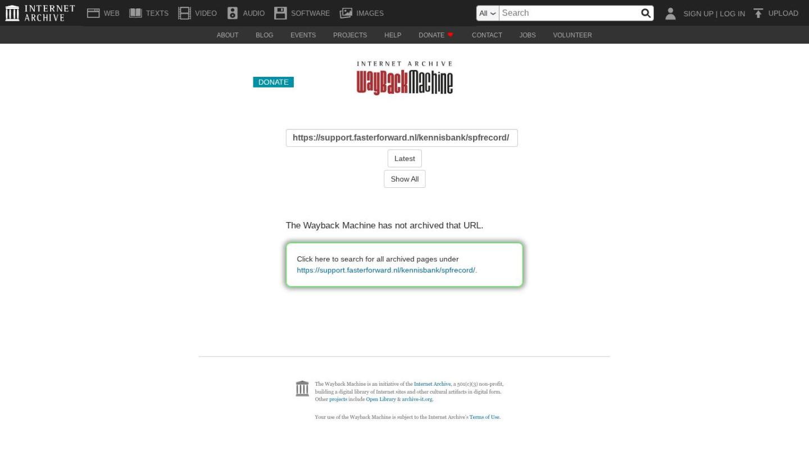

Ockto koppeling gebruiken en instellen

Tekstinhoud
Ockto koppeling gebruiken en instellen | Support
---
Ockto koppeling gebruiken en instellen
Klantgegevens op een snelle, veilige manier verzamelen en delen: het kan dankzij de koppeling tussen eBlinqx en de mobiele applicatie Ockto. Hiermee blijft er voor jou meer tijd over voor het geven van een goed advies op basis van volledige, actuele gegevens.
Wat is Ockto?
Zo werkt eBlinqx i.c.m. Ockto
Klantportaal aanmaken
Digimap: QR-code scannen
Uwkluis: QR-code scannen
Klant en partner
Klant levert gegevens aan met DigiD
Identificatie/Ockto-ID
Overzicht Ockto data bronnen
Datafilter brondata
Gegevens in eBlinqx
Bericht matchen aan persoon
Gegevens doorsturen naar adviespakket
Gegevens naar geldverstrekker
Status Ockto bericht
Ockto ODM-bestand downloaden
Documenten uit Ockto
Koppeling laten inrichten
Wat is Ockto?
Ockto is dé online methode om data te verzamelen voor consumenten die een financieel product willen afsluiten. Jouw klanten delen eenvoudig financiële informatie over hun huishouden met jou en hypotheekverstrekkers.
Zo werkt eBlinqx i.c.m. Ockto
Klantportaal aanmaken
Om een klant uit te nodigen om Ockto te gebruiken, maak je eerst een online klantportaal aan in eBlinqx. Dit is de Digimap of Uwkluis. Hier lees je hoe je een Digimap aanmaakt en de uitnodiging verstuurt naar de klant. Hier lees je hoe je een Uwkluis aanmaakt en de uitnodiging verstuurt naar de klant.
Digimap: QR-code scannen
De klant scant vanuit de Digimap de QR-code. Dit kan de klant doen vanuit de Ockto app of de camera op zijn telefoon. Bij het scannen met de camera wordt gekeken of de app al op de telefoon staat. Heeft de klant de app op zijn telefoon dan wordt hij daar naartoe geleid en anders naar de playstore om de app te downloaden.
QR code in Digimap van jouw klant
In de Digimap zien de instructies voor de klant over Ockto er zo uit:
Uwkluis: QR-code scannen
De QR code om een bronverzoek bij Ockto aan te vragen is niet direct zichtbaar in Uwkluis. Hiervoor moet je een brondataverzoek via de workflow versturen. Bij het versturen van de activatiemail kan je er direct voor kiezen om ook het brondataverzoek Ockto op te starten. Ook is het mogelijk om deze later in de workflow op te starten.
Na het klikken op de stap in de workflow komt er vervolgens in Uwkluis onder het tabblad Verzoeken een verzoek te staan.
De klant kan op dit verzoek klikken. Wanneer de klant op het verzoek heeft geklikt, kom je uit in een scherm om het brondataverzoek te starten. Bij het starten van het brondataverzoek krijgt de klant een QR code te zien. Dit kan de klant doen vanuit de Ockto app of de camera op zijn telefoon. Bij het scannen met de camera wordt gekeken of de app al op de telefoon staat. Heeft de klant de app op zijn telefoon dan wordt hij daar naartoe geleid en anders naar de playstore om de app te downloaden.
Klant en partner
Na het scannen gaat de klant de gegevens aanleveren (zie hieronder). Het is niet meer mogelijk om in één Ocktosessie ook de gegevens van de partner op te halen. Er zal een apart brondataverzoek voor de partner aangemaakt moeten worden. In Uwkluis komen dan 2 QR-codes te staan. Dit moet dan wel zo ingericht zijn in de workflow. Is dit niet het geval stuur dan een e-mail naar support-eblinqx@blinqx.tech, zodat we dit kunnen aanpassen.
Klant levert gegevens aan met DigiD
In Ockto verzamelt jouw klant zijn financiële gegevens bij sites van de overheid waar deze gegevens al bekend zijn. Denk aan gegevens over gezinssamenstelling, inkomsten, uitgaven, pensioen, bezittingen, schulden en diverse documenten. Dit doet de app onder andere via de websites van de Belastingdienst, het UWV, mijnpensioenoverzicht.nl en Mijn Overheid.
De informatie wordt verzameld bij betrouwbare bronnen. Deze klopt dus altijd en wordt veilig uitgewisseld volgens de meest recente standaarden. Jouw klanten verzamelen zelf de informatie die ze nodig hebben en kunnen dit digitaal met je delen via de Ockto app. Je hoeft dus geen gegevens meer over te typen. Hierdoor bespaar je veel tijd.
Identificatie/Ockto-ID
De klant kan zich via de Ockto-journey ook identificeren. De klant dient dit dan te doen via MijnOverheid en iDIN bij de bank.
Als de identificatie via MijnOverheid en iDIN overeenkomt dan wordt er in het ODM bestand een OcktoID meegestuurd. Daarnaast komt er een Ockto ID PDF mee. Dit is het bewijs van identificeren en hierin staan ook de paspoort/ID gegevens. Het OcktoID wordt gebruikt om de identificatie/verificatie in het klantonderzoektabel te vullen. Hier lees je er meer over. Het Ocko ID PDF wordt gebruikt door een aantal geldverstrekkers in plaats van een kopie ID kaart/paspoort.
Overzicht Ockto data bronnen
Onderstaande bronnen worden via eBlinqx en Uwkluis/digimap opgehaald bij Ockto.
Bron Gegevens
MijnOverheid: Basisregistratie Personen (BRP) Gegevens over een persoon, zoals de naam, de geboortedatum, het e-mailadres, de huwelijkse status, het woonadres, de woonhistorie, familierelaties, de nationaliteit, de verblijfsstatus en het paspoortnummer.
MijnOverheid: Kadaster/WOZ Gegevens over bestaande woning(en), het WOZ-rapport van de gemeente en gegevens uit het Kadaster.
MijnOverheid: Mijn Geregistreerd Inkomen (MGI) Gegevens over Mijn Geregistreerd Inkomen/IBRI, o.a. voor het vaststellen van inkomens van zzp'ers.
UWV Verzekeringsbericht Gegevens over werkgevers (tot 5 jaar terug), het actuele salaris, het soort dienstverband, eventuele uitkeringen en het gebruik van een leaseauto.
Belastingdienst: Vooraf Ingevulde Aangifte Gegevens over de huishoudensamenstelling, verschillende soorten inkomen, schulden en bezittingen zoals een huis, bankrekeningen en hypotheken.
Belastingdienst: Aangifte Inkomstenbelasting Alle gegevens van de definitieve belastingaangifte over de afgelopen jaren (max 5). Met o.a. winst, omzet en vermogen van een onderneming. Beschikbaar voor natuurlijke personen, inclusief eenmanszaken/zzp'ers.
Mijnpensioenoverzicht.nl Gegevens over het pensioen dat iemand heeft opgebouwd (inzicht in de opgebouwde waarde per pensioenfonds).
DUO Gegevens over eventuele studieschulden, actuele studies en behaalde diploma's van hogescholen en universiteiten.
Datafilter brondata
Je kunt ervoor kiezen of bij de Ockto-journey alle beschikbare gegevens, bij de bron waar de klant toestemming voor geeft, worden opgehaald of dat er beperkte gegevens worden opgehaald. Dit wordt bepaald door middel van een datafilter. Met het datafilter 'ElementsAdvies' haalt Ockto alle beschikbare gegevens op. Met het datafilter 'ElementsHypotheekAdvies' haalt Ockto beperkte data op. Staat er geen datafilter ingesteld dan wordt standaard de beperkte data (ElementsHypotheekAdvies) aangehouden. De datafilters worden beheerd door Ockto. Heb je specifieke vragen over de inhoud van de filters dan kan je contact met hen opnemen.
Het datafilter kan je instellen onder jouw kantoor/per kantoor en/of onder een specifiek dossier.
Kantoor
Om het datafilter onder een kantoor in te stellen ga je naar Beheer – Organisatie & Personen – betreffende kantoor – Instellingen – Ockto. Hier klik je op het plusicoon om een filter toe te voegen. De instelling zet je op 'Datafilter'. Bij waarde selecteer je het gewenste filter. Alle brondata verzoeken die voor dit kantoor opgevraagd worden, bevatten het ingestelde filter. Dit filter bepaalt dus hoeveel data er wordt opgehaald en vervolgens wordt aangeleverd.
Dossier
Je kunt het filter ook onder het dossier invoeren. Dit onder het tabblad Brondata.
Dit filter overruled het filter wat staat ingesteld onder het kantoor. Het kan voorkomen dat je over het algemeen beperkte data wilt ophalen, maar dat je voor een specifiek dossier liever alle data ophaalt. Dit kan je regelen door middel van het filter onder het dossier. Standaard staat dit veld gevuld met datgene wat onder kantoor ingesteld staat. Staat onder het kantoor niets ingesteld dan staat hier ElementsHypotheekAdvies. Let op: het filter onder het dossier juist ingesteld te staan, voordat jouw klant aan de Ockto-journey begint.
Gegevens in eBlinqx
Nadat de gegevens zijn verzameld met de Ockto app maakt de klant de keuze om dit met jou te delen. Via een beveiligde verbinding ontvang je de data vervolgens in eBlinqx. Dit in een brondata (ODM) bestand.
Wanneer een Ockto bericht (ODM bericht) in eBlinqx binnenkomt, wordt deze automatisch aan het bijbehorende dossier gekoppeld. Dit bericht vind je vervolgens terug in het dossier onder het tabblad Startpagina – Brondata.
Ook krijg je onder de tegel 'Binnengekomen berichten' in de 'Brondata inbox' een melding wanneer er een ODM bericht is ontvangen. Hier kan je het bericht verder werken door achter de paarse pijl te klikken. Je komt dan uit in het tabblad Brondata in het dossier.
Daarnaast krijg je in het dossier zelf een melding wanneer er een nieuwe ODM bericht is binnengekomen.
Bericht matchen aan persoon
In het dossier – tabblad Brondata zie je welke persoon uit het dossier zijn gegevens via de Ockto app heeft doorgegeven. Het is hierbij belangrijk om het bestand te matchen aan de juiste persoon. Aan de rechterkant van het scherm match je de Ockto brondatabestanden aan de bijbehorende dossierpersonen.
Let op! Het is alleen mogelijk om nieuwe berichten te matchen. Als er al een nieuwe bericht aan de persoon is gematched kan een ouder Ockto bericht niet meer gematched worden.
Gegevens doorsturen naar adviespakket
Vanuit eBlinqx stuur je de Ockto gegevens van de klant direct door naar de gewenste adviesapplicatie.
Ga hiervoor in het dossier naar het tabblad Export – selecteer jouw adviesapplicatie (Figlo, Adviesbox, Dias, Findesk of FinRust).
Hier kies je:
Vanuit welke bron je de klantgegevens wilt exporteren (de klantgegevens vanuit Ockto of de gegevens uit eBlinqx).
Van welke persoon je de gegevens wilt delen. Je kunt hier kiezen voor één persoon of van beide personen tegelijk (gecombineerd).
Het bestand van welke datum je naar het adviespakket wilt sturen.
Gegevens naar geldverstrekker
Nadat je het advies hebt gemaakt en hebt teruggestuurd naar eBlinqx dan worden de klantgegevens in eBlinqx geüpdatet. Vanuit het dossier verstuur je de aanvraag naar de geldverstrekker. In deze aanvraag wordt meegegeven dat de klant de Ockto-journey heeft doorlopen. De geldverstrekker kan vervolgens bij Ockto de gegevens opvragen. Het voordeel hiervan is dat de klant niet nogmaals bijvoorbeeld pensioengegevens aan moeten leveren. De geldverstrekker hoeft deze stukken dan niet (via een DA-bericht) op te vragen bij de adviseur.
Let op!
De Ockto koppeling werkt alleen bij nieuwe klanten en niet bij bestaande klanten die al eerder naar Adviesbox of Figlo geëxporteerd zijn.
Bij Findesk wordt er een nieuw tabblad geopend. Bij eerder ingelezen dossiers, het dossier in Findesk verwijderen om opnieuw de gegevens vanuit Ockto door te sturen.
ODM ouder dan 90 dagen wordt niet geaccepteerd in het adviespakket.
Status Ockto bericht
Ockto berichten krijgen ook één van de volgende statussen:
Nieuw
Personen gematcht
Verwerkt
Deze zijn aan te passen via de paarse pijl in het tabblad Brondata.
Ockto ODM-bestand downloaden
Ook is het mogelijk om het Ockto ODM-bestand te downloaden. Het laatste Ockto bestand download je via het tabblad 'Startpagina – Brondata' in het dossier. Het betreft een Json bestand. De oudere versies zijn te downloaden via het tabblad 'Historie'.
Documenten uit Ockto
Met het ODM bestand worden ook documenten naar eBlinqx verstuurt. Deze kan je in het dossier terugvinden onder het tabblad Documenten. Dit zijn de bestanden PDF.pdf, UWV.pdf, UPO.pdf. en OCKTOIDPDF.pdf. Het OcktoIDPDF staat alleen in het dossier als het ODM-bestand het OcktoID bevat.
Koppeling laten inrichten
Wil je gebruik maken van de koppeling? Stuur dan een e-mail naar support-eblinqx@blinqx.tech.
Laatste update: 15 oktober 2025
Was deze informatie nuttig?
Ja Nee